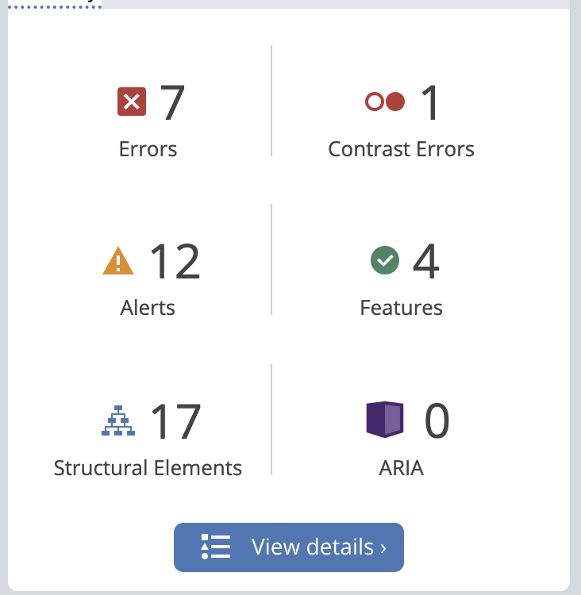

This website is for a Nicaraguan coffee brand. I chose it to help my parents create a website for their coffee brand in Nicaragua. Additionally, the website is not intuitive and could use some work.
One of the reasons why I would think someone would want to visit this website is to buy coffee and other than the “Contact” button there is no clear way to do so. This talks about the learnability aspect of the website, as a user would probably have to surf it all to know where things lie, instead of the website design telling the user where to find the stuff they are looking for. On every page, there is a block image like the above that takes half the screen and looks like an advertisement of the same company, instead of providing the important information page. This talks about the efficiency of the website as more than half of every page is taking up space that could be used for more relevant information so that the user would not be overwhelmed by loads of content. If I were to stumble onto this page, I would be unclear as to what its purpose is. That is, to represent the brand, sell coffee, and serve as a newsletter for coffee readers(because of the bottom part of the homepage). This is a poor use of the memorability principle as a user will probably easily forget their visit to this page or the reason they entered it.
The report was as follows:  I do agree with WAVE that there were a couple of things that could have made the design more accessible. Sometimes their use of the brand colors (orange and red) overlaid on each other caused issues when trying to read. Another issue was the lack of Aria labels, which since some pictures (for some reason) were not rendering there was just an empty icon, rather than an explanation of what was supposed to be there. A lot of the justified text, made it hard to read as it was continuous to each other and some of the links were either broken and connected to the same link.
It includes the low-fidelity mockup, the high fidelity mockup and the style guide.